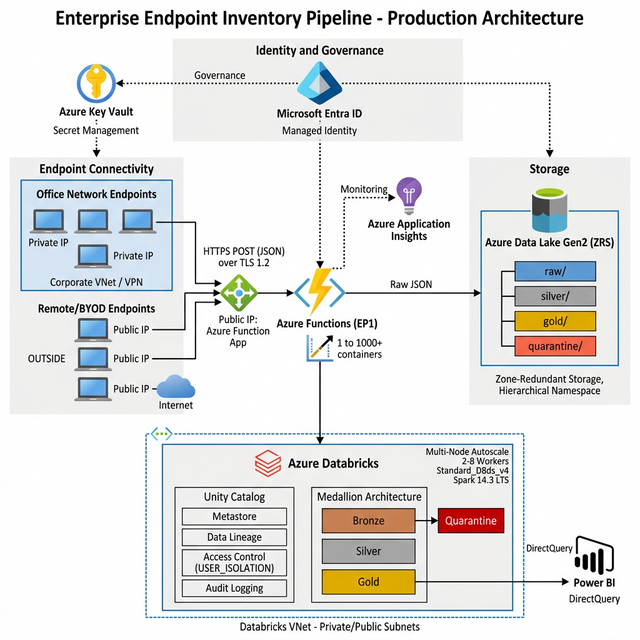

This document outlines the operational process flow for capturing hardware, software, driver, and custom inventory data from 1M+ client endpoints and ingesting it into a centralized Azure Databricks Delta Lake with full SCD Type 2 dimensional history.

Figure 1 — End-to-End Production Architecture with VNet Boundaries and Unity Catalog Governance
A PowerShell agent (inventory_agent.ps1) executes on the client endpoint via Intune, SCCM, or Group
Policy on a daily schedule.
The Azure Function (function_app.py) receives the HTTP POST request and routes it to the data lake.
x-functions-key header.EndpointId and
PayloadType from the JSON body.IngestionTimestamp (UTC)
and MessageId (UUID v4) for deduplication and lineage tracking._delta_log transaction history. ADLS Gen2 provides a true POSIX Hierarchical Namespace, which is
required for transactional integrity.
Landing Zone Path Structure:
raw/{PayloadType}/YYYY/MM/DD/{EndpointId}_{UUID}.jsonAn Azure Databricks Job cluster activates on a daily schedule and executes the scd2_processor.py
notebook.
Standard_D8ds_v4 worker nodes (2 to 8)
based on payload volume with Unity Catalog governance enabled.
spark.read.json.AnalysisException handlers gracefully skip empty directories and 403 Access Denied
errors without terminating the cluster._corrupt_record fields (malformed JSON) and routes them
to a dedicated quarantine Delta table.EndpointId are also quarantined with reason tagging.EndpointId select only the most
recent payload per execution cycle.InstalledSoftware) into top-level columns via explode_outer for First Normal Form
(1NF) compatibility.dim_hardware, dim_software, dim_drivers, dim_custom).
source.PayloadHash != target.PayloadHash. If data is
identical, the record is silently skipped.IsActive = False,
ValidTo = current_timestamp()).IsActive = True and
ValidFrom = current_timestamp().spark.databricks.delta.schema.autoMerge to accommodate new
JSON fields without manual DDL.If the Databricks cluster is unresponsive or unavailable, the Edge Agent continues to deposit JSON payloads into the ADLS Gen2 raw zone. No data is lost. Upon the next successful cluster startup, Databricks processes the accumulated backlog of JSON files. The idempotent SCD2 merge logic ensures no duplicate dimension rows are created even if the same data is processed multiple times.
| Step | Action | Tool |
|---|---|---|
| 1 | Deploy Azure infrastructure (VNet, ADLS, Functions, Databricks, Key Vault) | az deployment group create with main.bicep |
| 2 | Deploy Function App code | func azure functionapp publish |
| 3 | Retrieve Function Key | az functionapp keys list |
| 4 | Upload scd2_processor.py to Databricks workspace |
Databricks Workspace UI or CLI |
| 5 | Create Databricks Job with 5 sequential tasks (hw, sw, drv, custom, audit) | Databricks Jobs API or UI |
| 6 | Configure storage key in Databricks job spark_conf or Key Vault | Key Vault secret reference |
| 7 | Deploy edge agent via Intune/GPO with correct API URL and key | Group Policy or Intune |
| 8 | Configure daily schedule for Databricks job | Databricks scheduled trigger |
| 9 | Set up Power BI DirectQuery connection to Gold Delta tables | Power BI Desktop |